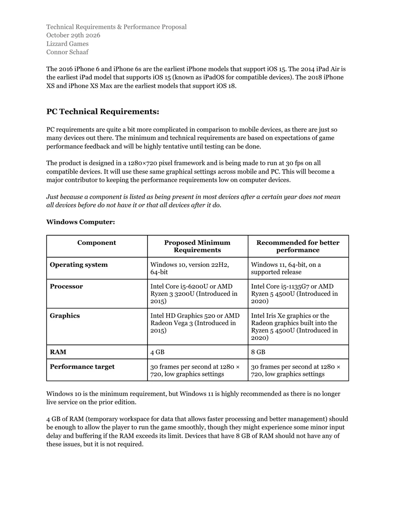

Project: Hope
Project: Hope is a student-led adventure game developed in tandem with the Ukraine Volya Foundation. It introduces coping techniques through stories and gentle exploration, gamifying mental health for children who have experienced major traumatic events.

My contribution
- Documented the hub, story progression, and player activities.
- Defined assistance for players who get stuck, without a penalty for using it.
- Separated optional challenges from activities needed to progress.
- Wrote the technical requirements and performance proposal.
Story progression
Players choose a book in a bedroom hub to enter a story. They explore with a friendly character, complete an activity, and return home. The hub gives each story a familiar starting and ending point.
Puzzles that move the story forward are separate from guided learning scenes. Each activity is designed around what it asks of the player and whether it could prevent them from reaching the rest of the story.
Helping a stuck player
For simple tasks such as finding ingredients, the planned assistance starts with a hint and can progress to highlighting the objects needed. Using help carries no penalty. Optional puzzles provide room for more challenge without blocking the main story.
Planning for modest hardware
The technical requirements cover modest hardware and rendering scope, with 720p at 30 fps as an initial planning target. Device support is refined through testing. The game is designed for offline play.